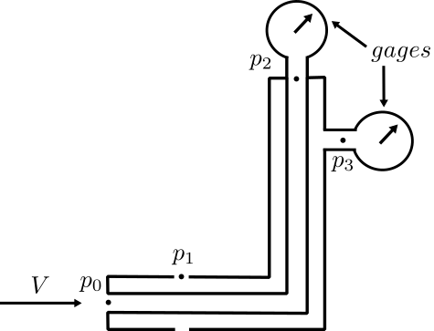

Velocity from the Pitot–Static Pressure Difference
\( V \;=\; \sqrt{\frac{2\,\Delta p}{\rho}} \)
\( \Delta p \,=\, p_{2}-p_{3} \)
\( p_{0}=p_{2},\;\; p_{1}=p_{3} \)
Symbols
- V — local flow speed (m·s\(^{-1}\))
- \(\Delta p\) — gauge reading between stagnation tap \(p_2\) and static tap \(p_3\) (Pa)
- \(\rho\) — density \(=\tfrac{p}{RT}\)
- R — 286.99 J·kg\(^{-1}\)·K\(^{-1}\); k — 1.40 (air)
- c — speed of sound \(=\sqrt{kRT}\)
- Ma — Mach number \(=V/c\) (tool caps \( \le 0.3\))

Choose a preset or pick Custom… to edit \(T\) and \(p\).
V (m/s)
—
Mach, Ma (–)
—
Δp (Pa)
—
ρ (kg/m³)
—
c (m/s)
—
\[ \rho=\frac{p}{RT} \]
\[ c=\sqrt{kRT} \]
\[ R=286.99\ \mathrm{J/(kg\cdot K)},\quad k=1.40 \]
In a Pitot–static probe the center hole senses the stagnation pressure and the side ports sense the static pressure.
The tubing carries those pressures to the remote gauges, so \(p_0=p_2\) (stagnation) and \(p_1=p_3\) (static).
The instrument therefore reads \( \Delta p = p_2 - p_3 = p_0 - p_1 \).
For \( \mathrm{Ma}\le 0.3\) we use \( V=\sqrt{2\,\Delta p/\rho} \) with \( \rho=p/(RT) \).
The limit shown uses \( c(T)=\sqrt{kRT} \) from the current \(T,p\).